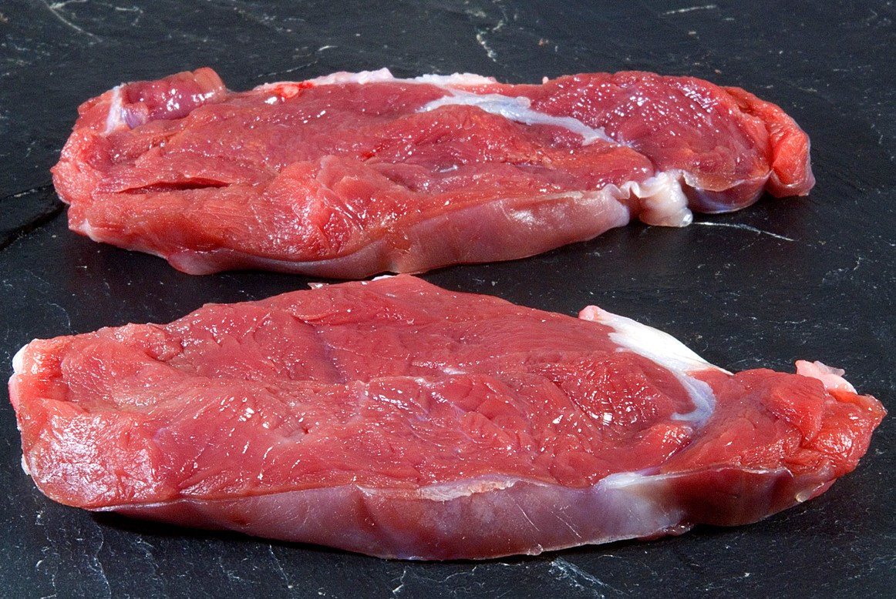
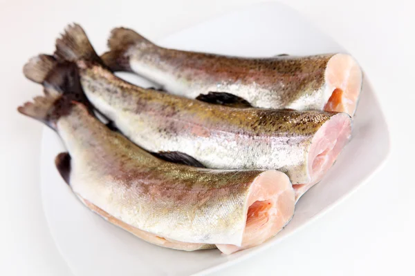

A base de proteína de pollo, frutas,vegetales, cereales, omegas, vitaminas y calcio
Lo quiero! A base de proteína de res y cerdo. Especial para recuperación de enfermedades y sumar Peso.
Lo quiero! A base de Trucha y pollo. Especial para perros con problemas digestivos y cardiacos.
Lo quiero!